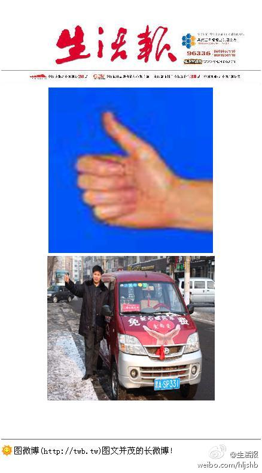

分享一段子<友谊地久天长>大家都说，男的跟女的是不能做好朋友的，因为关系很容易往肮脏低俗里发展，这话我一直不相信，因为我有一个很好的朋友，她就是女的，我们之间的友谊特别的纯洁，之所以这么说，是因为每次办完事……
爱心也要有界限哦~在哈尔滨市区就行了~为了您的人身安全,千万不要去呼兰~@生活报:【想搭顺风车请竖大拇哥！一会下班等车时试一下】许多私家车主表示，摇下车窗询问乘客是否需要搭免费顺风车时，大多数人并不是要搭车，如果统手势，有利于乘客和车主达成一致，减少时间。今起，如果您在路上看到车的挡风玻璃右侧有红色“冰城爱心顺风车”标牌，即可竖起大拇指拦车，手势见下图 